Herbicidas
31 produtosRoundup Original
Herbicida não seletivo sistêmico — Glifosato
Atua por absorção foliar e translocação para toda a planta, controlando espécies anuais e perenes. Muito usado em pré-plantio de diversas culturas.
Dessecação total com alta eficiência e sistemicidade.
I.A.: Glifosato
 Herbicida
Herbicida
Roundup Transorb
Herbicida seletivo condicional sistêmico — Glifosato
Tecnologia que aumenta a absorção e velocidade de ação do glifosato, garantindo maior eficiência no manejo pré-plantio.
Maior translocação e rapidez de controle.
I.A.: Glifosato
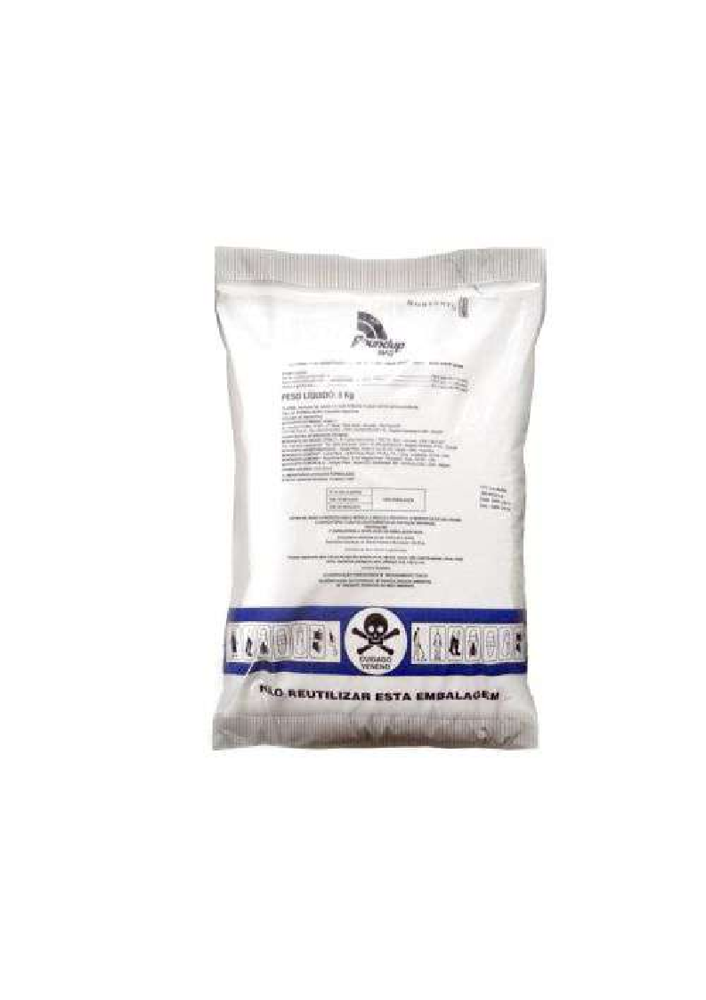
HerbicidaRoundup WG
Herbicida sistêmico granulado — Glifosato WG
Versão granulada do glifosato. Praticidade no transporte e preparo da calda sem perder eficiência agronômica.
Formulação WG prática, segura e eficiente.
I.A.: Glifosato (WG)
 Herbicida
Herbicida
Garlon 480 BR
Herbicida sistêmico seletivo auxínico — Triclopir
Indicado para controle pós-emergente de plantas daninhas lenhosas, arbustivas e herbáceas de folhas largas. Amplamente usado em pastagens e arroz irrigado.
Alto poder sistêmico no controle de plantas lenhosas e de folhas largas.
I.A.: Triclopir-butotílico (480 g/L)
 Herbicida
Herbicida
Glifosato IPA 480 Rainbow
Herbicida não seletivo sistêmico
Utilizado para dessecação total de áreas, eficaz contra plantas daninhas anuais e perenes em pré-plantio e pós-emergência.
Controle completo com formulação confiável e custo-benefício.
I.A.: Glifosato, sal isopropilamina
 Herbicida
Herbicida
Glifosato 72 WG Alamos
Herbicida não seletivo sistêmico granulado concentrado
Formulação de alta concentração para controle total de plantas daninhas em áreas agrícolas e não agrícolas.
Maior concentração por kg reduzindo volume de embalagem.
I.A.: Glifosato 720 g/kg
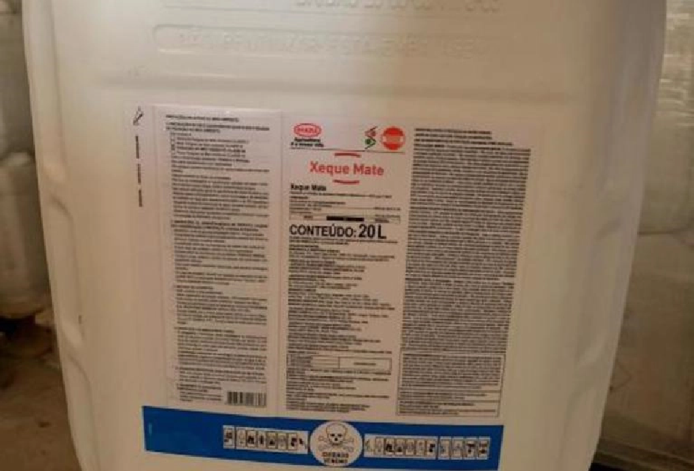
HerbicidaXeque Mate
Herbicida de amplo espectro sistêmico — Glifosato sal de potássio
Sal de potássio proporciona absorção mais rápida e excelente controle de plantas daninhas em dessecação pré-plantio.
Ação mais rápida que glifosatos convencionais.
I.A.: Glifosato — sal de potássio
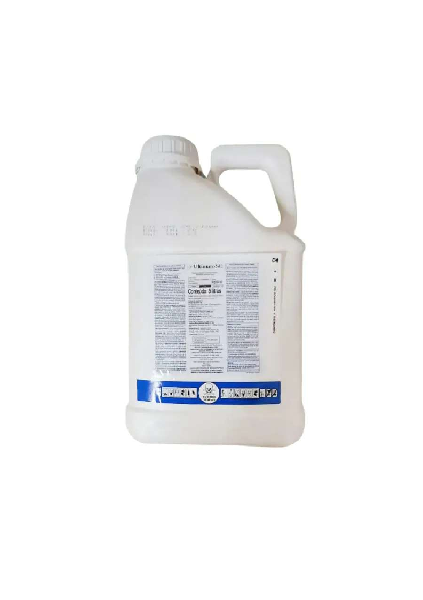
HerbicidaUltimato SC
Herbicida seletivo — Atrazina
Amplamente utilizado no manejo de plantas daninhas em milho e sorgo. Atua por absorção radicular em pré e pós-emergência inicial.
Controle eficiente de folhas largas e gramíneas sensíveis em milho.
I.A.: Atrazina
HerbicidaPoquer (ADAMA)
Herbicida graminicida pós-emergente
Indicado para controle seletivo de gramíneas em culturas de folhas largas. Atua por absorção foliar, mais eficiente em gramíneas jovens.
Alta eficácia no controle de capins em pós-emergência.
I.A.: Clodinafop-propargil
Falcon
Herbicida seletivo pós-emergente
Utilizado no manejo de diversas espécies infestantes, atuando de forma seletiva e eficiente em folhas largas e gramíneas.
Controle robusto em pós-emergência e uso ideal em manejo rotacional.
I.A.: A confirmar
 Herbicida
Herbicida
Galigan 240 EC
Herbicida pré-emergente — Oxifluorfen
Controle de plantas daninhas antes da emergência da cultura. Muito utilizado em HF, fruticultura e áreas perenes.
Controle pré-emergente com ótimo residual e ampla gama de folhas largas.
I.A.: Oxifluorfen
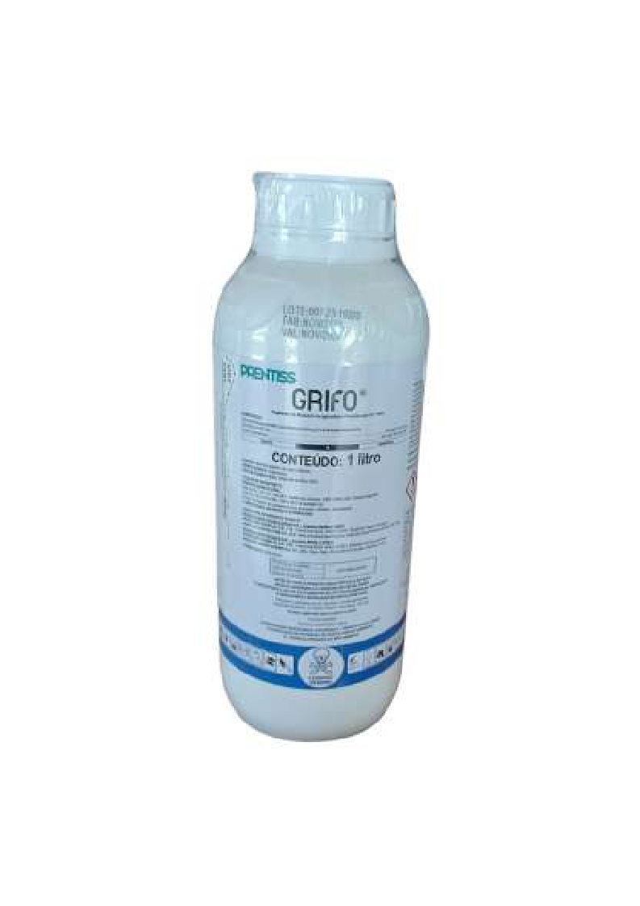
HerbicidaGrifo
Herbicida seletivo sistêmico para milho — Nicossulfurom
Herbicida seletivo utilizado principalmente em milho, atuando no controle de folhas largas e gramíneas sensíveis em pós-emergência inicial.
Alta seletividade para milho com forte ação sistêmica.
I.A.: Nicossulfurom
Padron
Herbicida sistêmico — Picloram + trietanolamina
Empregado no controle de plantas daninhas de difícil manejo em pastagens e áreas perenes, com alta translocação na planta.
Alta eficácia em daninhas resistentes, lenhosas e rebrotas.
I.A.: Picloram + trietanolamina
Prowl H2O
Herbicida pré-emergente — Pendimentalina
Herbicida de longa persistência no solo amplamente utilizado em soja, milho e HF para controle de gramíneas e folhas largas.
Controle pré-emergente duradouro com baixa volatilidade.
I.A.: Pendimentalina
Premerlin 600
Herbicida seletivo
Aplicado para controle de folhas largas e gramíneas em diferentes sistemas produtivos. Versátil com bom espectro de controle.
Controle eficiente de plantas daninhas jovens com seletividade adequada.
I.A.: A confirmar
Panoramic Ultra
Herbicida seletivo de amplo espectro
Utilizado no controle de plantas daninhas em diversas culturas, atuando em folhas largas e algumas gramíneas sensíveis.
Controle consistente com baixo risco de fitotoxicidade.
I.A.: A confirmar
Sialex
Herbicida seletivo
Empregado no manejo de plantas daninhas que competem com culturas de grãos e perenes, com controle de amplo espectro.
Ação eficaz contra plantas jovens em desenvolvimento.
I.A.: A confirmar
Sammit
Herbicida sistêmico
Indicado para manejo de plantas daninhas de folhas largas e gramíneas em múltiplas culturas, com uso consolidado no campo.
Controle eficiente de daninhas de difícil manejo.
I.A.: A confirmar
Simboll
Herbicida seletivo pré e pós-emergente
Utilizado no controle de diversas espécies daninhas de folhas largas e gramíneas, com eficácia consistente em diferentes estádios.
Versatilidade de uso com amplo espectro de controle.
I.A.: A confirmar
 Herbicida
Herbicida
Afalon
Herbicida pré-emergente / pós inicial — Linuron
Tradicionalmente utilizado no manejo de folhas largas em feijão, milho e outras culturas, com forte ação residual.
Alta eficiência em pré e pós-emergência inicial com excelente seletividade.
I.A.: Linuron
Amplo
Herbicida seletivo
Oferece controle eficaz de folhas largas e algumas gramíneas, sendo utilizado em diversas culturas com boa seletividade.
Controle rápido e seguro para a cultura com amplo espectro.
I.A.: A confirmar
Basagran 600
Herbicida pós-emergente — Bentazon
Muito utilizado em soja, feijão e arroz, seletivo e eficiente no controle de folhas largas e tiririca em pós-emergência.
Controle eficaz de tiririca e folhas largas com alta seletividade.
I.A.: Bentazon
Clorimuron Prentis 300
Herbicida seletivo sistêmico — Clorimuron-etílico
Tradicional na soja e outras culturas, proporcionando controle eficiente de folhas largas difíceis em pós-emergência.
Alta eficácia contra folhas largas de difícil controle com forte ação sistêmica.
I.A.: Clorimuron-etílico
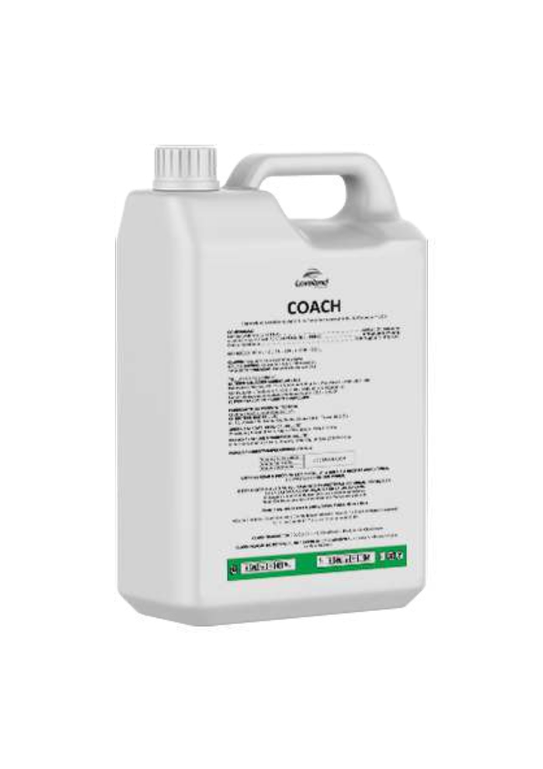
HerbicidaCoach
Herbicida seletivo
Utilizado no controle de plantas daninhas sensíveis em pós-emergência. Versátil e com boa seletividade para diversas culturas.
Controle confiável em folhas largas com fácil aplicação.
I.A.: A confirmar
Plethora
Herbicida seletivo
Utilizado em áreas agrícolas para controle de diferentes espécies daninhas com alta eficiência em folhas largas jovens.
Alta eficiência em folhas largas jovens com amplo espectro.
I.A.: A confirmar
Patrol
Herbicida seletivo
Atua de forma seletiva no controle de plantas invasoras em diferentes culturas, com controle eficiente de folhas largas.
Controle eficiente de folhas largas com bom custo-benefício.
I.A.: A confirmar
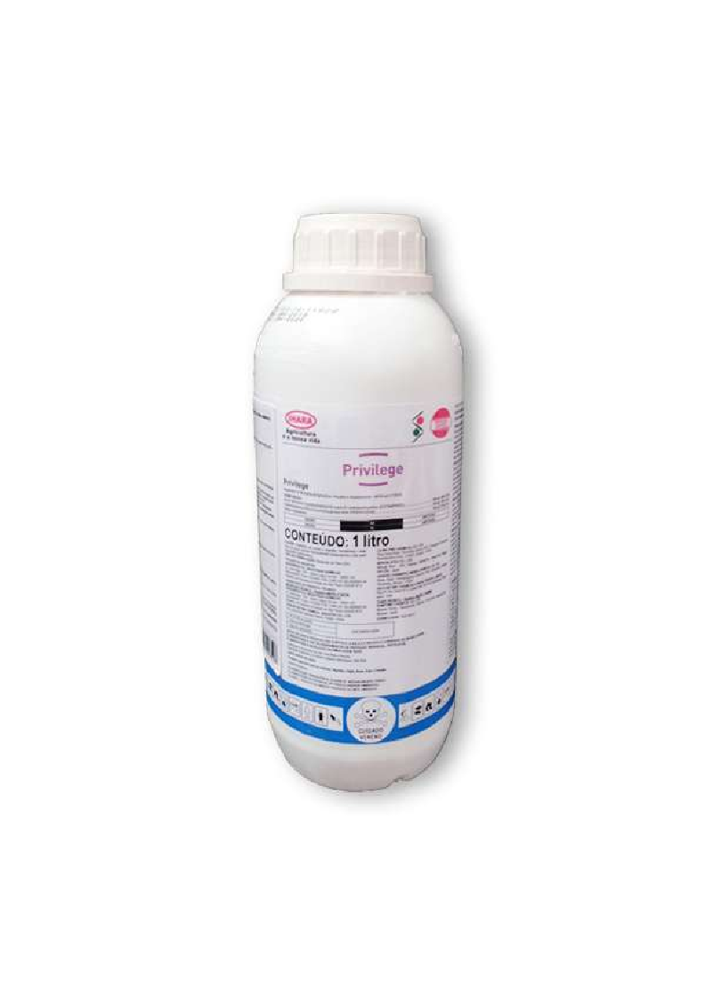
HerbicidaPrivilege
Herbicida seletivo
Fornece controle adequado de folhas largas com segurança à cultura, conforme prescrição agronômica.
Controle seletivo com segurança comprovada à cultura.
I.A.: A confirmar
Truper
Herbicida seletivo pós-emergente
Empregado no manejo de plantas invasoras em pós-emergência, com controle rápido e boa seletividade em diversas culturas.
Controle rápido e eficiente com fácil aplicação.
I.A.: A confirmar
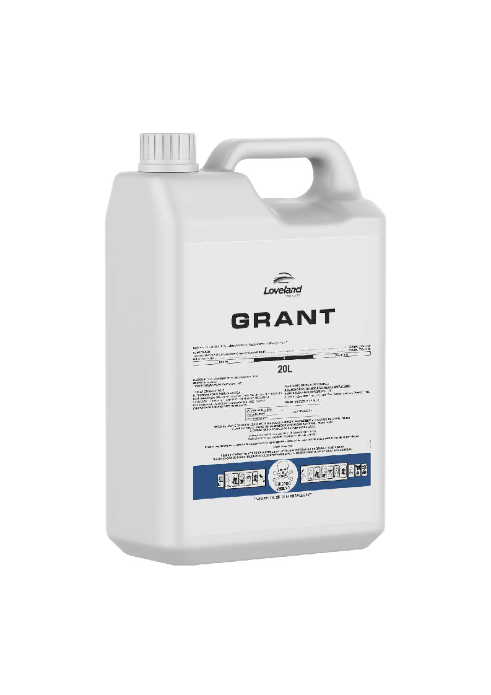
HerbicidaGrant
Herbicida sistêmico — 2,4-D (Auxina Sintética)
Controle de plantas daninhas de folhas largas como fura-capa e pião. Ação hormonal eficaz com rápida absorção e translocação.
Alto controle em pós-emergência de daninhas jovens com ação hormonal.
I.A.: 2,4-D sal de dimetilamina (806 g/L)
Mirato
Herbicida seletivo sistêmico — 2,4-D
Controle de folhas largas em pós-emergência com alta mobilidade nas plantas, aplicação prática e rápido resultado em campo.
Controle rápido de folhas largas em pós-emergência.
I.A.: 2,4-D sal de dimetilamina
Evolus
Herbicida sistêmico WG — Hexazinona (Inibidor FS II)
Controle de plantas daninhas em cana em pré e pós-emergência inicial, com ação residual prolongada e ampla abrangência.
Controle com ação residual eficiente em cana-de-açúcar.
I.A.: Hexazinona 450 g/kg
Fungicidas
18 produtos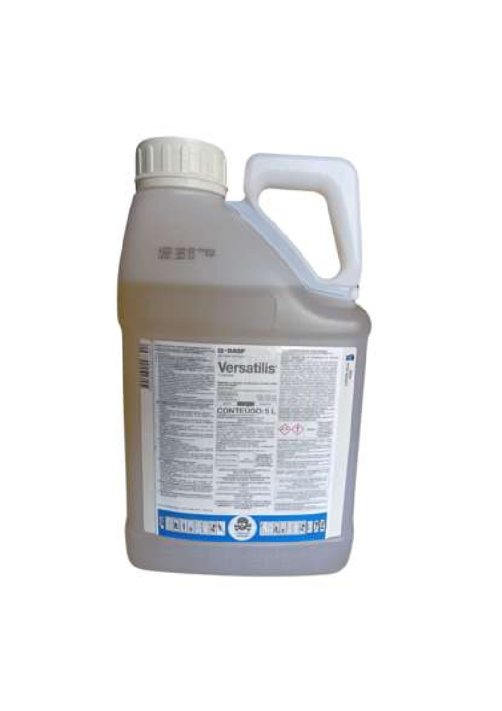
FungicidaVersatilis
Fungicida sistêmico — Fenpropimorfe
Fungicida sistêmico da BASF indicado para manejo de doenças em soja, milho, HF e frutíferas. Atua de forma eficaz especialmente em oídio.
Ação sistêmica eficiente contra doenças foliares, especialmente oídio.
I.A.: Fenpropimorfe
 Fungicida
Fungicida
Cabrio Top (BASF)
Fungicida protetor / residual — Piraclostrobina + Metiram
Proteção efetiva contra míldio, manchas e doenças de hortaliças e uva. Excelente para programas preventivos em HF e viticultura.
Proteção superior com ação protetora, residual e melhora da qualidade foliar.
I.A.: Piraclostrobina + Metiram
Cantus
Fungicida sistêmico — Boscalida
Utilizado em soja, uva, HF e ornamentais. Fornece proteção prolongada e ação translaminar contra ferrugens e manchas.
Alta proteção foliar translaminar com longo residual.
I.A.: Boscalida
 Fungicida
Fungicida
Cercobim 875 WG
Fungicida sistêmico WG — Carbendazim
Baseado em carbendazim com fácil dissolução, proporcionando controle de diversas doenças foliares e manchas em múltiplas culturas.
Ação sistêmica com formulação WG de fácil manuseio.
I.A.: Carbendazim
 Fungicida
Fungicida
Monceren 250 SC
Fungicida protetor — Pencycuron
Proteção prolongada contra doenças de solo, amplamente utilizado em batata, milho, cana e outras culturas para controle de rizotônia.
Controle eficiente de Rhizoctonia e podridões com alto residual.
I.A.: Pencycuron
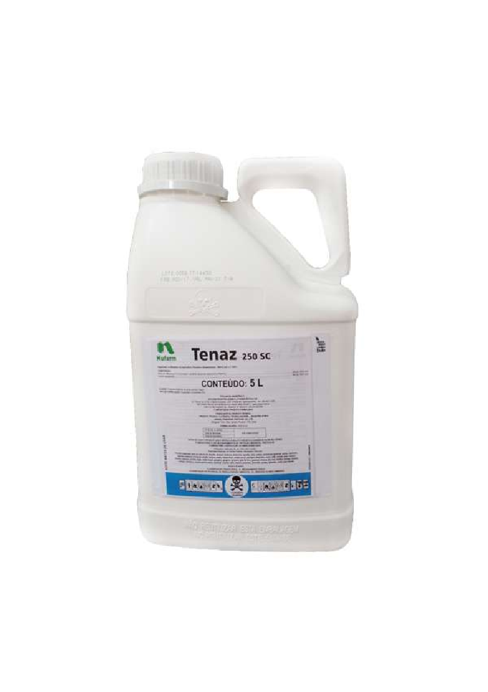
FungicidaTenaz 250 SC
Fungicida triazol sistêmico — Flutriafol
Alta performance contra ferrugens e manchas foliares, muito utilizado em soja, milho e HF com bom residual em condições úmidas.
Ação sistêmica potente contra doenças foliares com bom residual.
I.A.: Flutriafol
Acrobat
Fungicida sistêmico / protetor — Dimetomorfe
Amplamente utilizado no controle de míldio e outras doenças em HF e frutíferas. Combina ação sistêmica e protetora com boa aderência.
Eficaz contra míldio com dupla ação sistêmica e protetora.
I.A.: Dimetomorfe
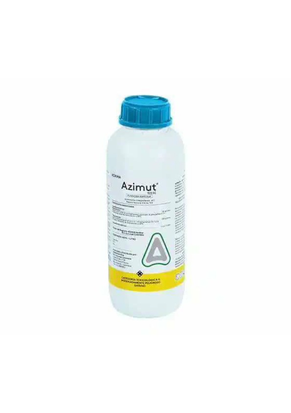
FungicidaAzimut
Fungicida
Oferece ação eficaz contra diversas doenças foliares, empregado em programas preventivos e rotacionais com boa compatibilidade em caldas.
Boa eficácia no controle de doenças iniciais com uso versátil.
I.A.: A confirmar
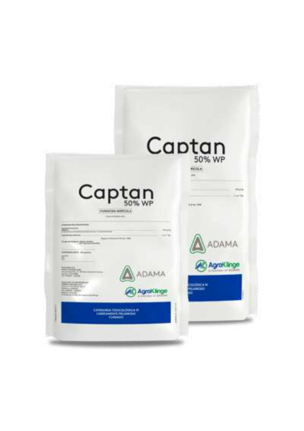
FungicidaCaptan
Fungicida de contato — Captan
Amplamente utilizado em fruticultura e olericultura, oferecendo proteção externa eficaz com baixo risco de resistência.
Proteção por contato confiável com baixo risco de resistência.
I.A.: Captan
Recop
Fungicida / bactericida de contato — Oxicloreto de cobre
Produto à base de oxicloreto de cobre utilizado no manejo de fungos e bactérias em diversas culturas, especialmente fruteiras.
Controle eficiente de doenças fúngicas e bacterianas em fruticultura.
I.A.: Oxicloreto de cobre
Efficon
Fungicida
Auxilia no controle preventivo de doenças foliares em estágios iniciais, com boa compatibilidade em caldas e uso versátil.
Ação eficiente contra doenças iniciais com desempenho consistente.
I.A.: A confirmar
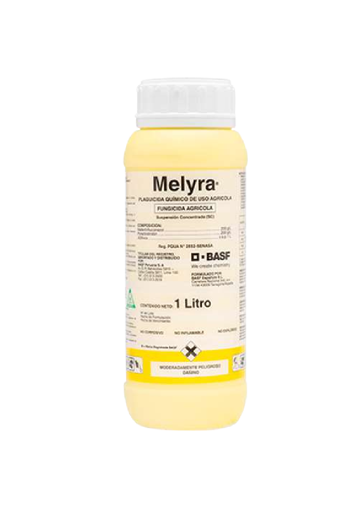
FungicidaMelyra (BASF)
Fungicida sistêmico — Mefentrifluconazol + Piraclostrobina
Combina dois ativos modernos oferecendo ação sistêmica e residual de alta performance para culturas intensivas.
Controle poderoso e moderno de doenças foliares com excelente residual.
I.A.: Mefentrifluconazol + Piraclostrobina
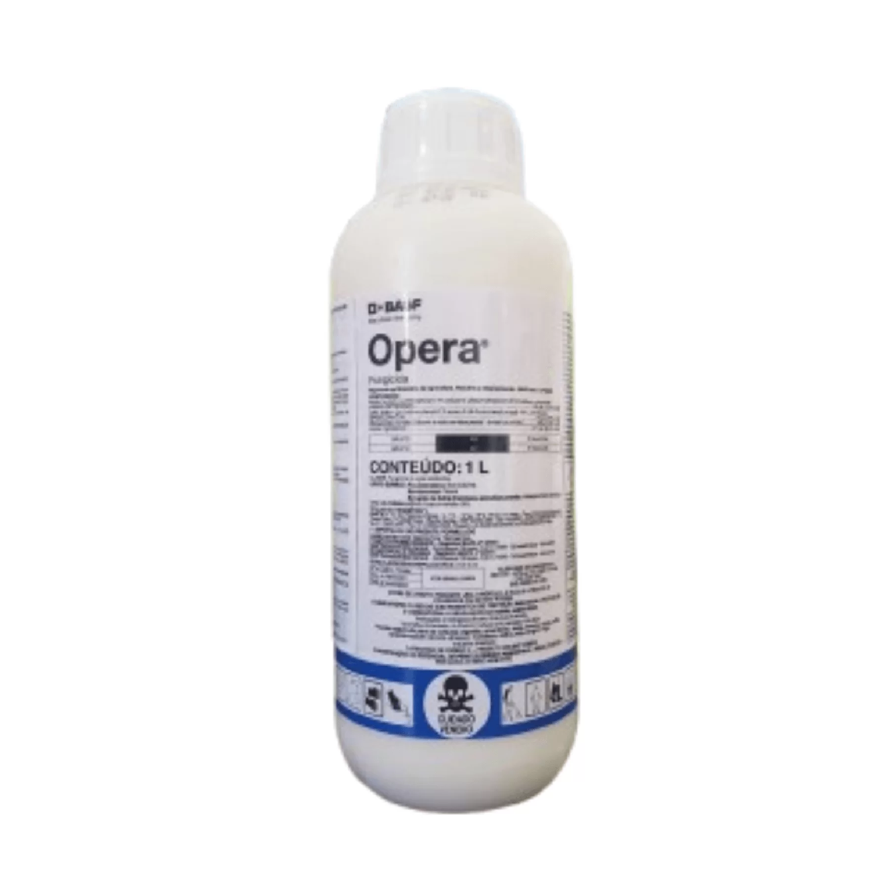
FungicidaOpera (BASF)
Fungicida sistêmico mesostêmico — Piraclostrobina + Epoxiconazol
Um dos fungicidas mais conhecidos da BASF, com amplo espectro, efeito fisiológico (efeito verde) que melhora vigor e produtividade em soja, milho e trigo.
Amplo espectro com efeito fisiológico que aumenta vigor e fotossíntese.
I.A.: Piraclostrobina + Epoxiconazol
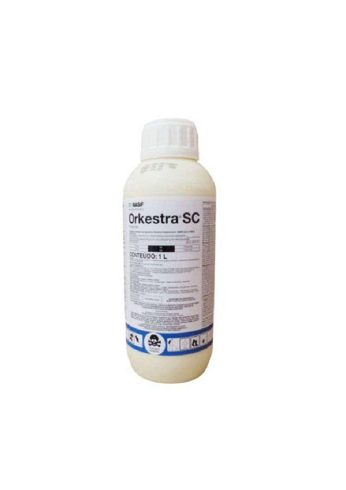
FungicidaOrkestra (BASF)
Fungicida premium — Fluxapiroxade + Piraclostrobina
Combina carboxamida moderna e estrobilurina, oferecendo um dos melhores desempenhos do mercado em ferrugem, manchas e oídio.
Eficiência superior contra ferrugem e manchas com forte residual.
I.A.: Fluxapiroxade + Piraclostrobina
Collis
Fungicida sistêmico — Boscalida + Metrafenona
Forte controle de ferrugem, mancha-branca e doenças difíceis em soja, milho e trigo, com excelente residual e ação em diferentes temperaturas.
Ação sistêmica potente com residual longo e controle consistente.
I.A.: Boscalida + Metrafenona
Imunit
Fungicida sistêmico (foliar e TS)
Utilizado no manejo de diversas doenças foliares, com ação sistêmica que protege a planta de dentro para fora. Versátil para foliar e tratamento de sementes.
Ampla proteção sistêmica para aplicação foliar e em sementes.
I.A.: A confirmar
Moncut
Fungicida protetor — Flutolanil
Especializado em doenças de solo como Rhizoctonia e podridões de base em batata, arroz, cana e ornamentais. Longa ação no solo.
Proteção eficiente contra doenças de solo com ação prolongada.
I.A.: Flutolanil
Fusão EC (IHARA)
Fungicida sistêmico — IHARA
Fungicida da IHARA para manejo de doenças foliares em soja, milho, algodão e HF. Ação sistêmica eficiente e excelente alternativa em programas de rotação.
Ação sistêmica eficiente contra doenças foliares em culturas de alto rendimento.
I.A.: A confirmar (IHARA)
Inseticidas / Acaricidas
28 produtos Inseticida / Cupinicida
Inseticida / Cupinicida
Tuit Florestal (BASF)
Inseticida contato e ingestão — Fipronil (Inibidor GABA)
À base de Fipronil, utilizado em viveiros e culturas florestais. Atua por contato e ingestão, eficaz contra cupins, formigas e pragas de solo.
Elevada eficiência contra pragas de solo e cupins com longo residual.
I.A.: Fipronil (800 g/kg)
Tutor
Inseticida
Utilizado no manejo de pragas em horticultura e fruticultura, oferecendo controle eficiente de folhas e frutos em pós-emergência.
Controle eficaz de pragas que atacam folhas e frutos.
I.A.: A confirmar
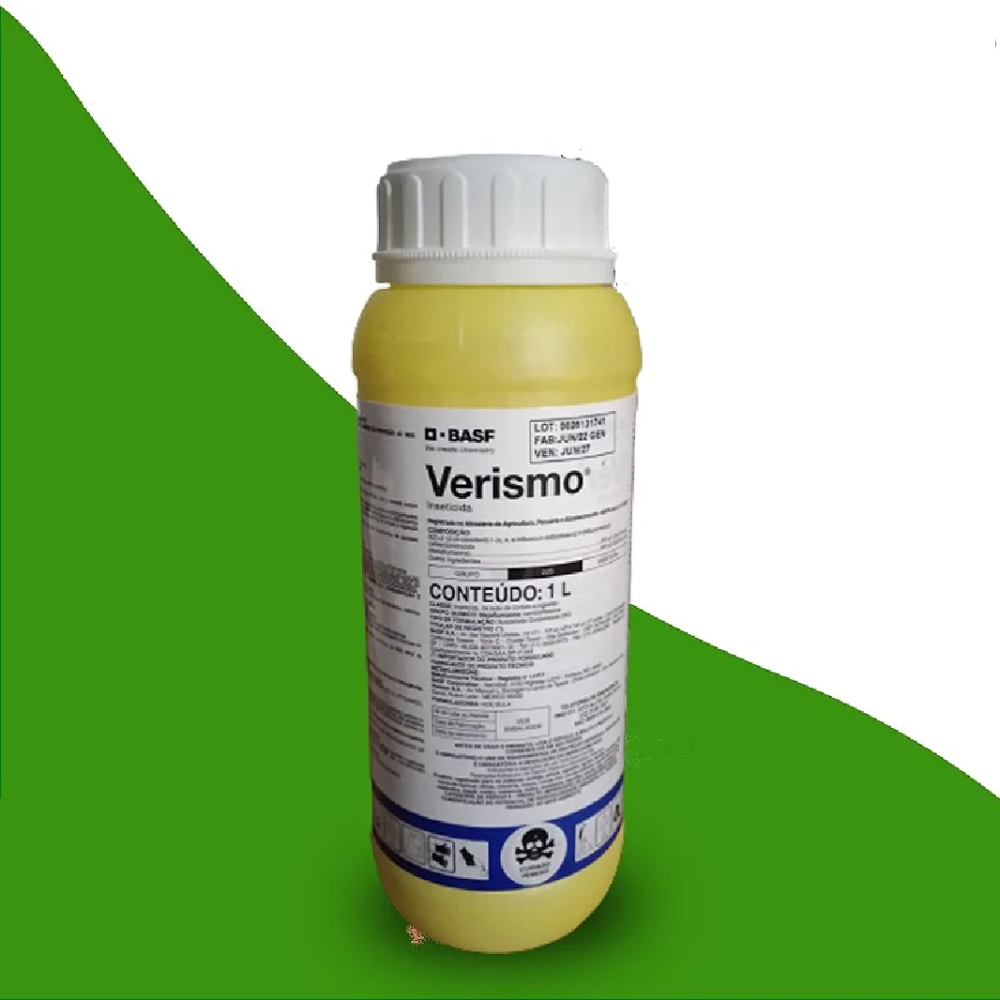
Inseticida IGRVerismo
Inseticida regulador de crescimento (IGR)
Ferramenta importante no manejo de lagartas em soja, algodão, tomate e milho, atuando de forma seletiva e segura para inimigos naturais.
Alto desempenho contra lagartas com alta seletividade e segurança.
I.A.: Methoxyfenozide
Vezir
Inseticida contato e ingestão
Utilizado para controle de mosca-branca, lagartas e sugadores em sistemas produtivos diversos. Ação de choque aliada à sistêmica parcial.
Boa ação de choque aliada à ação sistêmica parcial.
I.A.: A confirmar
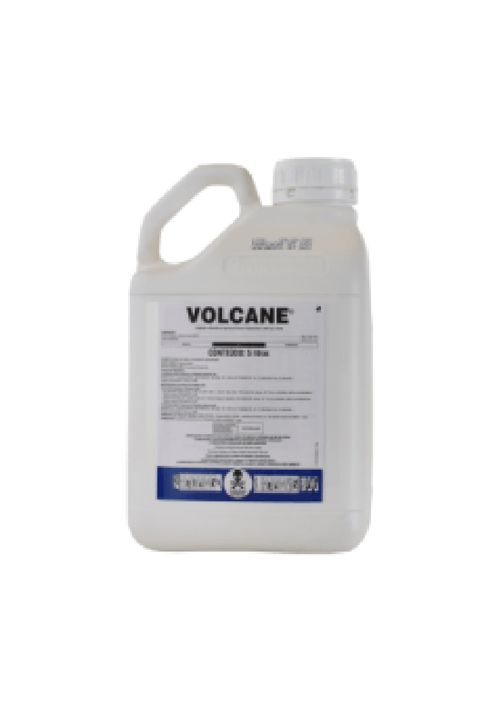
InseticidaVolcane
Inseticida sistêmico e contato
Usado em diversas culturas para controle de lagartas e sugadores resistentes, com boa ação sistêmica e rápida atuação inicial.
Atuação eficiente sobre pragas resistentes a ingredientes comuns.
I.A.: A confirmar
Zeus
Inseticida ação de choque + residual prolongado
Controle efetivo de lagartas e pragas de importância econômica em grãos, HF e algodão. Alta eficiência contra lagartas com excelente residual.
Ação de choque combinada com residual prolongado.
I.A.: A confirmar
 Inseticida
Inseticida
Disparo Ultra-S
Inseticida contato e ingestão
Utilizado em diversas culturas para controlar lagartas, sugadores e mosca-branca com controle rápido e ação múltipla.
Controle rápido com ação múltipla e bom custo-benefício.
I.A.: A confirmar
Juvix
Inseticida contato e ingestão
Utilizado no manejo de pragas sugadoras e mastigadoras em soja, milho, HF e frutíferas, com controle rápido no início da infestação.
Boa ação contra pragas sugadoras e lagartas jovens.
I.A.: A confirmar
Navius
Inseticida
Aplicado no controle de insetos que atacam folhas, brotações e frutos com ação eficaz em diferentes estádios de desenvolvimento da praga.
Controle eficiente em diferentes estádios da praga com boa ação residual.
I.A.: A confirmar
Spirit (IHARA)
Inseticida sistêmico + Fungicida triazol — Dinotefuram + Flutriafol
Produto especial da IHARA com dupla ação sobre pragas e doenças. Alta eficiência em climas tropicais para controle simultâneo.
Ação simultânea contra insetos e doenças iniciais em uma aplicação.
I.A.: Dinotefuram + Flutriafol
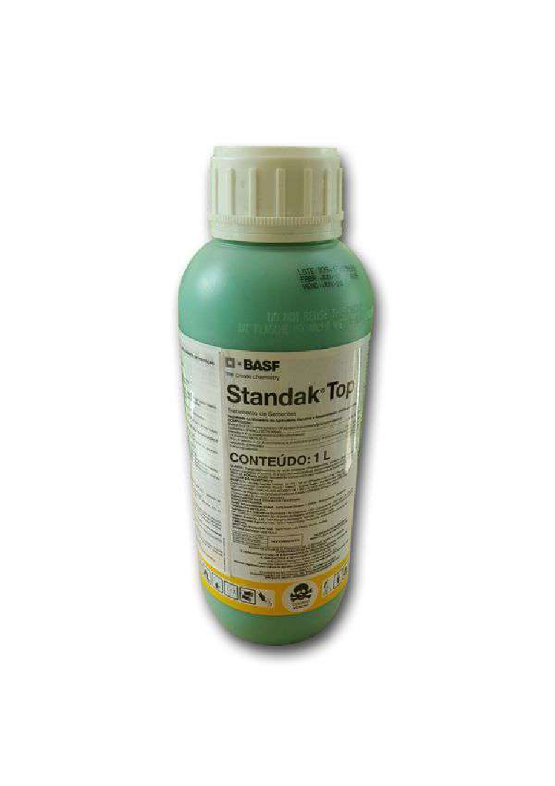
Inseticida + Fungicida TSStandak Top
Tratamento de sementes — Fipronil + Piraclostrobina + Tiofanato-metílico
TS de alta performance protegendo a germinação contra doenças e pragas iniciais de solo. Germinação mais uniforme e menor falha no estande.
Proteção completa das sementes contra fungos e insetos de solo.
I.A.: Fipronil + Piraclostrobina + Tiofanato-metílico
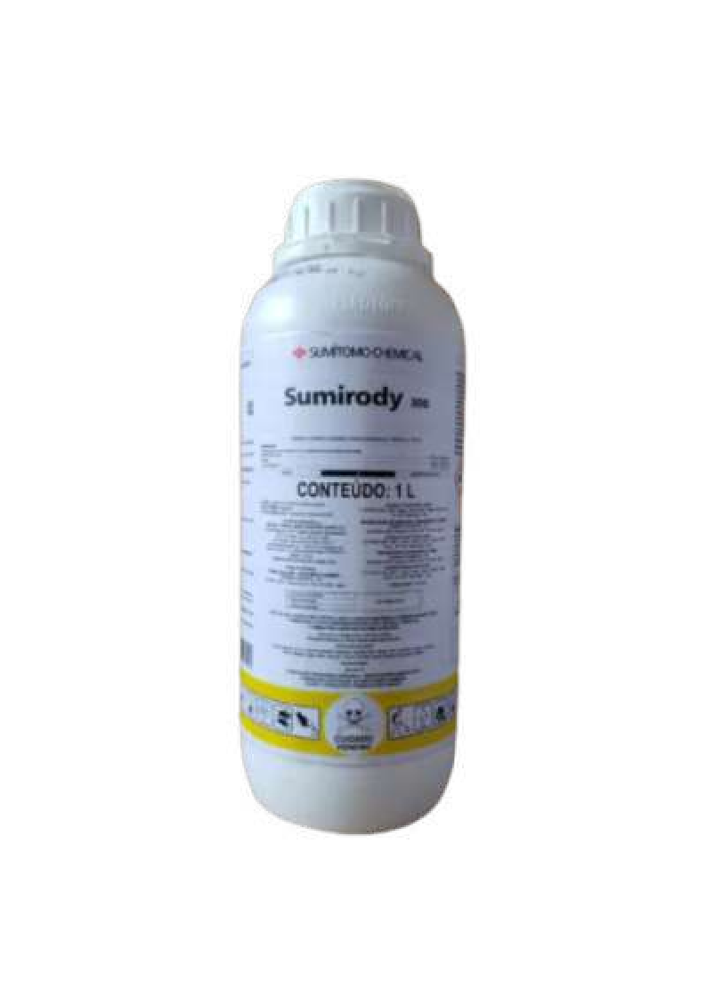
InseticidaSumirody 300
Inseticida sistêmico — Sumitomo
Utilizado para controle de lagartas e insetos sugadores em soja, algodão, HF e milho. Alta performance contra lagartas em estágios iniciais (L1–L2).
Alta performance contra lagartas em L1–L2 com rápida ação ingestiva.
I.A.: A confirmar (Sumitomo)
Sumirody 500
Inseticida sistêmico concentrado — Sumitomo
Maior concentração que o Sumirody 300, oferecendo desempenho superior em pragas mais resistentes e condições adversas de campo.
Controle reforçado de lagartas e sugadores resistentes.
I.A.: A confirmar (Sumitomo)
Super Red
Inseticida contato e ingestão
Atua no controle de diversas pragas que danificam folhas e brotações em HF, frutíferas e grãos com controle rápido e bom custo-benefício.
Controle rápido e eficiente de pragas iniciais com bom custo-benefício.
I.A.: A confirmar
Terminus
Inseticida sistêmico e contato — Acetamiprido + Lambda-Cialotrina
Combina ação sistêmica (neonicotinoide) com choque rápido (piretroide) para controle de sugadores, percevejos e mosca-branca.
Dupla ação: choque imediato + efeito sistêmico prolongado.
I.A.: Acetamiprido + Lambda-Cialotrina
Egan
Inseticida contato e ingestão
Apresenta ação eficaz em pragas iniciais em várias culturas, com controle rápido e bom espectro de ação.
Boa ação por contato e ingestão com controle rápido e versátil.
I.A.: A confirmar
Epingle 100 (Sumitomo)
Inseticida contato e translaminar
Muito utilizado no controle de mosca-branca, ácaros e lagartas leves. Ação translaminar protege o verso das folhas com excelente performance em HF.
Alta performance em mosca-branca e pragas de folha com ação translaminar.
I.A.: A confirmar (Sumitomo)
 Inseticida / Cupinicida
Inseticida / Cupinicida
Eventra (Fipronil)
Inseticida e cupinicida contato e ingestão — Fipronil
Aplicado no controle de formigas, cupins, pragas de solo e lagartas iniciais. Atua rapidamente com longo residual em eucalipto e grãos.
Alta eficiência contra cupins e pragas de solo com ação rápida.
I.A.: Fipronil
Abacus
Inseticida contato e ingestão
Atua contra insetos que atacam folhas e brotações em diversas culturas agrícolas com controle eficiente de pragas iniciais.
Controle eficiente de pragas iniciais com boa versatilidade.
I.A.: A confirmar
 Acaricida / Inseticida
Acaricida / Inseticida
Abamex Maxx
Acaricida + inseticida translaminar — Abamectina
Formulação moderna de abamectina para controle de ácaros e insetos minadores em HF, citros e soja. Ação translaminar aprimorada.
Controle superior de ácaros e minadoras com ação translaminar.
I.A.: Abamectina
Abamectin
Acaricida / inseticida translaminar — Abamectina
Muito usado para controle de ácaros, minadoras e lagartas leves. Ação translaminar controla pragas no verso da folha com bom residual em HF.
Alta eficiência no controle de ácaros com ação translaminar.
I.A.: Abamectina
Acefato
Inseticida organofosforado sistêmico e contato
Muito utilizado em soja, milho, algodão e HF para controle de percevejos e sugadores. Alta eficácia sistêmica com ação de contato.
Alta eficácia contra percevejos com dupla ação sistêmica e contato.
I.A.: Acefato
Alumnus
Inseticida
Bom desempenho contra lagartas em estágios jovens em culturas extensivas e HF, com seletividade e ação translaminar parcial.
Controle eficiente de lagartas pequenas com boa seletividade.
I.A.: A confirmar
 Inseticida
Inseticida
Ancosar
Inseticida ingestão e contato
Indicado para controle de lagartas em rotação de ingredientes ativos, auxiliando no manejo de resistência com ação rápida.
Boa alternativa para rotação de lagarticidas e manejo de resistência.
I.A.: A confirmar
Blindado
Inseticida tratamento de sementes — Neonicotinoide
Atua na proteção inicial das plântulas, evitando danos de pragas de solo e sugadores iniciais com proteção sistêmica desde a germinação.
Proteção sistêmica desde a germinação reduzindo falhas no estande.
I.A.: Neonicotinoide (a confirmar)
Cruiser
Inseticida sistêmico TS — Tiametoxam
Amplamente usado em TS para soja, milho, algodão e feijão, garantindo proteção inicial contra sugadores e pragas de solo com forte ação sistêmica.
Proteção prolongada da plântula com forte ação sistêmica.
I.A.: Tiametoxam
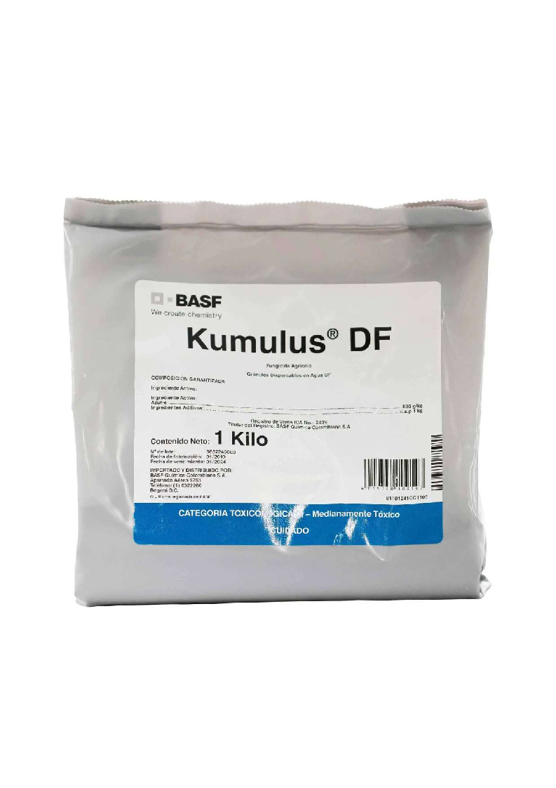
Acaricida / FungicidaKumulus
Acaricida / fungicida contato — Enxofre (800 g/kg)
Produto à base de enxofre com dupla ação acaricida e fungicida. Controle de ácaros rajados e oídio em diversas culturas, com baixo risco de resistência.
Dupla ação acaricida e fungicida com baixo risco de resistência.
I.A.: Enxofre 800 g/kg
Engeo Pleno
Inseticida sistêmico + contato — Tiametoxam + Lambda-Cialotrina
Combina tiametoxam com lambda-cialotrina, fornecendo ação dupla em percevejos, mosca-branca e outras pragas de difícil controle.
Dupla ação sistêmica e choque rápido em pragas de difícil controle.
I.A.: Tiametoxam + Lambda-Cialotrina
Biológicos
1 produto Inseticida Biológico
Inseticida Biológico
Dipel WP
Inseticida biológico — Bacillus thuringiensis var. kurstaki
Inseticida biológico à base de Bt kurstaki para controle seletivo de lagartas lepidópteras em diversas culturas, sem resíduo e seguro para inimigos naturais.
Controle seletivo de lagartas sem resíduos e seguro para polinizadores.
I.A.: Bacillus thuringiensis var. kurstaki
Reguladores de Crescimento
1 produtoDormex
Regulador de crescimento — Cianamida hidrogenada
Utilizado para quebra de dormência em fruteiras de clima temperado (uva, pêssego, maçã, nectarina), antecipando e uniformizando a brotação.
Quebra eficiente de dormência uniformizando brotação e aumentando produtividade.
I.A.: Cianamida hidrogenada
Sementes
5 produtos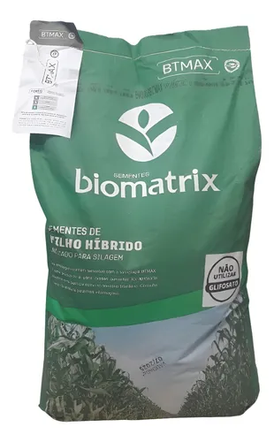
Semente de MilhoBM 3066 BTMax Fortis NDB
Híbrido de milho — Tecnologia BTMax Fortis NDB
Híbrido de milho com tecnologia BTMax Fortis NDB, proporcionando proteção robusta contra pragas e alta adaptação às condições do Centro-Oeste e MG.
Proteção robusta contra pragas com alta adaptabilidade regional.
Tecnologia: BTMax Fortis NDB
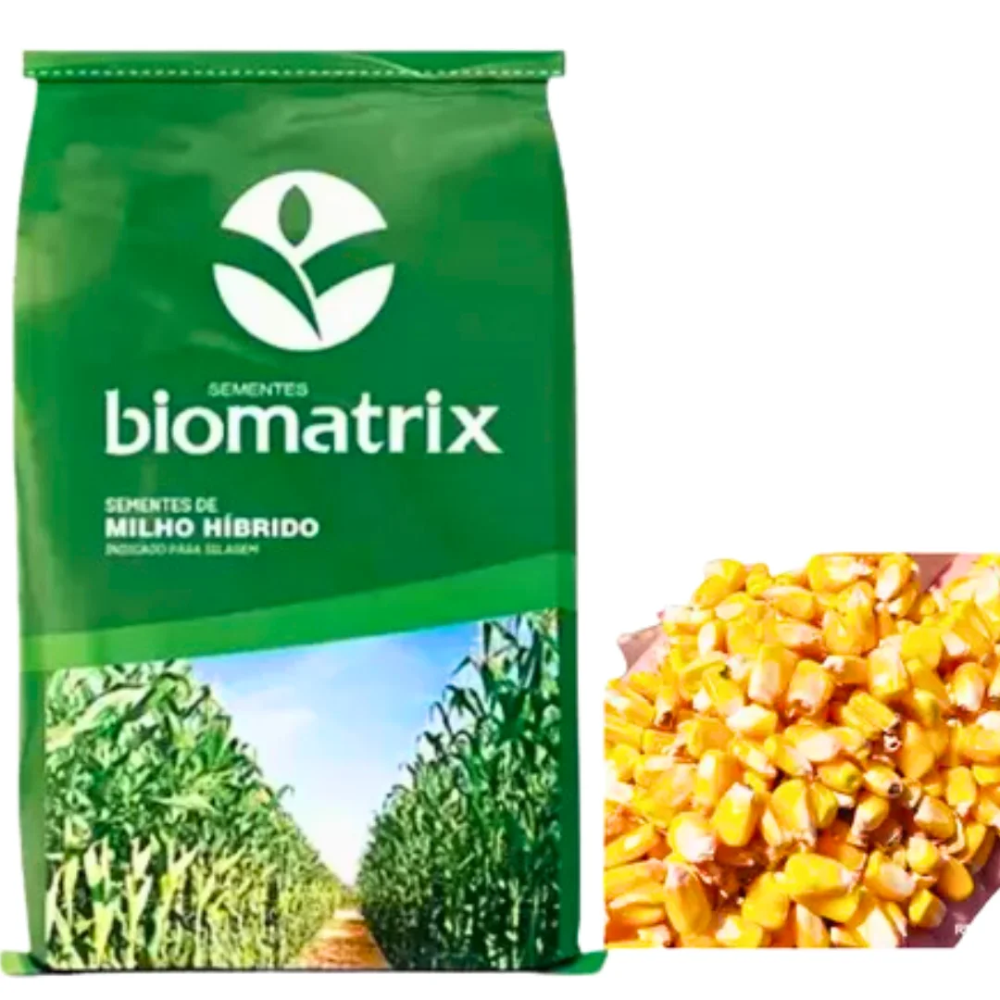
Semente de MilhoBM 3069 BTMax Fortis NDB
Híbrido de milho — Tecnologia BTMax Fortis NDB
Híbrido de alto potencial produtivo com tecnologia BTMax Fortis NDB para proteção integrada e excelente desempenho em condições de sequeiro e irrigado.
Alto potencial produtivo com proteção integrada.
Tecnologia: BTMax Fortis NDB
 Semente de Milho
Semente de Milho
BM 3099 BTMax Fortis NDB
Híbrido de milho — Tecnologia BTMax Fortis NDB
Híbrido de ciclo precoce com tecnologia BTMax Fortis NDB, ideal para sistemas de produção que exigem maior rapidez no ciclo e produtividade consistente.
Ciclo precoce com alta produtividade e proteção BTMax.
Tecnologia: BTMax Fortis NDB
 Semente de Milho
Semente de Milho
BM 990 Vip3
Híbrido de milho — Tecnologia Vip3
Híbrido com tecnologia Vip3 oferecendo proteção ampliada contra lagartas, incluindo Spodoptera e Helicoverpa, com estabilidade produtiva em diferentes ambientes.
Proteção ampliada contra Spodoptera e Helicoverpa com estabilidade produtiva.
Tecnologia: Vip3
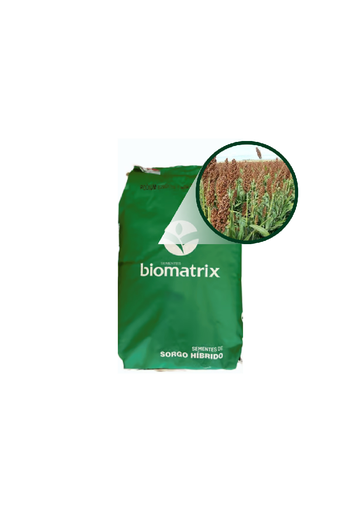
Semente de SorgoSorgo Podium Forrageiro 10 Kg
Sorgo forrageiro — embalagem 10 kg
Variedade de sorgo forrageiro de alto rendimento em matéria seca, ideal para produção de silagem e pastejo diferido em propriedades de MG e região.
Alto rendimento em matéria seca para silagem e pastejo diferido.
Tipo: Sorgo forrageiro
Fertilizantes & Bioestimulantes
18 produtosSulfeto SK
Fertilizante líquido concentrado — Enxofre + Potássio
Produto "2 em 1" que combina nutrição (S e K) com efeito desalojante de pragas como lagartas, ácaros e cigarrinhas. Baixo índice salino, apto para culturas sensíveis.
Dupla função: nutrição + desalojante natural de pragas.
Nutrientes: Enxofre (S) + Potássio (K) — Dosagem: 0,5 L/ha
Intacto
Fertilizante fosfatado com nitrogênio — Polifosfato de amônio
Fonte de fósforo de alta disponibilidade com liberação gradual. pH neutro permite aplicação em elevadas concentrações via barra, pivô, aspersão ou gotejamento sem risco de fitotoxicidade.
Reduz fixação de fósforo no solo e volatilização do N, maximizando aproveitamento.
Nutrientes: Fósforo (P) + Nitrogênio (N)
Salut
Fertilizante foliar + bactericida/fungicida — Ácido fosforoso + Cobre
Combinação sinérgica de ácido fosforoso e cobre com ação preventiva e curativa. Estimula fitoalexinas e lignina para defesa natural da planta. Eficaz contra oídio, ferrugem, mofo branco e bactérias.
Ação sistêmica dupla: nutrição + indução de resistência a doenças.
I.A.: Ácido fosforoso (H₃PO₃) + Cobre (Cu)
Matriz G
Bioestimulante completo — Aminoácidos + Fitormônios + Alga Ascophyllum nodosum
Mais de 20 aminoácidos, fitormônios e extrato de algas para redução de estresse, melhora do enraizamento e aumento da resistência. Indicado em tratamento de sementes (2 ml/kg) ou pós-germinação.
Tolerar seca e salinidade com enraizamento mais profundo e sistema imune fortalecido.
Composição: Aminoácidos + Fitormônios + Ascophyllum nodosum
N Top
Fertilizante foliar — Nitrogênio de liberação gradual
Alta concentração de N com liberação contínua ao longo do ciclo. Aplicação foliar independe das condições de umidade do solo. Excelente compatibilidade em mistura com drone. Fase ideal: crescimento vegetativo, pré-floração e desenvolvimento de grãos.
N gradual via foliar, otimizando absorção de macro e micronutrientes.
Nutrientes: Nitrogênio (N) concentrado
Protex
Fertilizante + protetor térmico — Cálcio + Nitrogênio
Forma camada protetora que reflete radiação solar, reduzindo temperatura interna da planta em 5–12 °C. Evita escaldadura, abortamento de vagens e perda de produtividade em altas temperaturas. Testado em soja, algodão, laranja, melancia e pimentão.
Proteção contra estresse térmico e solar, mantendo eficiência fotossintética.
Nutrientes: Cálcio (Ca) + Nitrogênio (N)
Terram
Organomineral líquido — Substâncias húmicas e fúlvicas (Leonardita)
Condicionador de solo e bioestimulante. Aumenta CTC, melhora aeração e retenção de água, estimula raízes e divisão celular. Aumenta atividade microbiana benéfica no solo.
Melhora estrutura do solo e disponibiliza nutrientes para absorção radicular.
Composição: Substâncias húmicas + fúlvicas (extrato de Leonardita)
Totale CoMo
Fertilizante foliar — Cobalto (Co) + Molibdênio (Mo)
Otimiza a fixação biológica de nitrogênio (FBN) em soja e feijão ativando bactérias Rhizobium. O Mo atua na nitrogenase e nitrato redutase; o Co é componente da vitamina B12 essencial para FBN.
Maximiza FBN reduzindo dependência de fertilizantes nitrogenados.
Nutrientes: Cobalto (Co) + Molibdênio (Mo)
Arquitec
Bioestimulante + fertilizante — Compostos orgânicos e minerais
Foco no desenvolvimento estrutural da soja e feijão. Atua no metabolismo vegetal para promover engalhamento, formar mais ramos e vagens, reduzindo risco de tombamento e aumentando potencial produtivo.
Mais ramos, mais vagens e estrutura mais robusta para soja e feijão.
Composição: Compostos orgânicos + minerais bioativos
Matriz G Plus
Fertilizante + bioestimulante para TS — Ascophyllum nodosum + macro e micronutrientes
Desenvolvido para promover desenvolvimento inicial das plantas. Favorece germinação uniforme, vigor desde os primeiros estágios, aceleração do fechamento da lavoura e resistência a estresses hídrico, térmico e salino.
Estande mais uniforme com fechamento rápido da lavoura e maior tolerância a estresses.
Composição: Macro + micronutrientes + Ascophyllum nodosum
Up Seeds
Fertilizante + bioestimulante para TS — Nutrientes + bioestimulantes
Combina nutrientes e bioestimulantes para promover germinação uniforme, sistema radicular profundo, absorção de N e favorecimento da FBN em leguminosas. Aumenta tolerância a estresses hídrico e ambiental.
Arranque vigoroso e raízes profundas desde a germinação.
Composição: Nutrientes + bioestimulantes para TS
Profol Produtividade
Fertilizante foliar completo — K, Mg, S, B, Cu, Mn, Zn
Nutrição completa e equilibrada ao longo de todo o ciclo. Otimiza fotossíntese, favorece produção de grãos e frutos. Alta compatibilidade em misturas de calda e segurança na aplicação foliar.
Macro e micronutrientes em um único produto com alta compatibilidade.
Nutrientes: K, Mg, S, B, Cu, Mn, Zn
Profol Exclusive
Fertilizante foliar pó WG — N, K, Mg, S, B, Cu, Mn, Mo, Zn
Alta performance em formulação WG (pó solúvel) com mix completo de macro e micronutrientes. Dissolução rápida, aplicação uniforme, alta compatibilidade com defensivos. Elimina necessidade de múltiplas aplicações.
Nutrição concentrada em pó WG: fácil transporte, dissolução rápida e aplicação uniforme.
Nutrientes: N, K, Mg, S, B, Cu, Mn, Mo, Zn
Nutriduo
Fertilizante foliar — N, P, K, Mg, Se, Zn, B
Foco em soja no estágio R3 (formação das vagens). Reduz estresse oxidativo em três linhas de defesa, promove biofortificação dos grãos com Mg, Zn e Se. Alta solubilidade e compatibilidade com defensivos. Dose: 1 kg/ha.
Biofortificação da soja R3 com redução de estresse oxidativo.
Nutrientes: N, P, K, Mg, Se, Zn, B
Torped Gold
Bioestimulante + fertilizante — Compostos bioativos
Estimula enraizamento e crescimento inicial, acelerando metabolismo vegetal. "Desbloqueia" fósforo no solo e auxilia recuperação de estresses como transplante, clima adverso e ataques de pragas.
Raízes fortes desde o início e recuperação rápida de estresses.
Composição: Compostos bioativos + fósforo disponível
Kalium
Fertilizante foliar concentrado — Potássio (K)
Alta concentração de K para enchimento e peso de grãos e frutos. Aumenta brix, melhora cor e vida útil dos frutos. Fortalece parede celular e aumenta resistência à seca e doenças.
Grãos mais pesados, frutos com mais brix e resistência à seca.
Nutrientes: Potássio (K) concentrado
Oxford
Bioestimulante + fertilizante foliar — Complexo de compostos metabólicos
Ativador metabólico geral que acelera produção de energia e uso de nutrientes. Melhora absorção do que está no solo e dos aplicados via calda. Recuperação rápida em estresses como falta d'água ou frio.
Ativador geral do metabolismo com rápida recuperação de estresses.
Composição: Complexo de compostos bioativos metabólicos
Arbolina
Biofertilizante nanotecnológico — Embrapa / UnB
Desenvolvida com pesquisadores da Embrapa e UnB. Atua como potencializador fotossintético ativando enzimas e processos celulares. Faz a planta utilizar a luz de forma mais eficaz, desenvolvendo o máximo do potencial genético. Compatível com defensivos e fertilizantes em calda conjunta.
Fotossíntese otimizada por nanotecnologia — mais produtividade e biofortificação.
Tecnologia: Biofertilizante nanotecnológico (Embrapa/UnB)
Phusion Power
Fertilizante solo — Alta concentração de Fósforo (P) — Tecnologia Maxxi-Phós
Fertilizante solúvel de alta eficiência com tecnologia Maxxi-Phós que reduz fixação de fósforo no solo. Parte dos nutrientes de liberação rápida (arranque) e parte prolongada. Ideal para fertirrigação via pivô, gotejamento ou aspersão.
Maxxi-Phós mantém o fósforo disponível, evitando perda por fixação no solo.
Nutrientes: Fósforo (P) — NPK balanceado — Tecnologia Maxxi-Phós
Micronutrientes Quelatizados
3 produtosKellus Inox
Fertilizante foliar quelatizado — Mn, Zn, P₂O₅ — Efeito Inox
Micronutrientes quelatizados com aditivo fisiológico "Efeito Inox". A quelatização protege os nutrientes de reações no tanque e na folha, garantindo maior absorção foliar e melhor translocação para pontos de crescimento.
Efeito Inox: planta em alto rendimento com melhor fotossíntese e menor estresse abiótico.
Nutrientes: Manganês (Mn) + Zinco (Zn) + Fósforo (P₂O₅)
Kellus Blindex
Fertilizante foliar quelatizado — Zn, Mn, Cu, P
Quelatização dos íons Zn, Mn, Cu e fósforo em formulação balanceada. Nutrição equilibrada para diversas culturas com alta eficiência de absorção, melhora do metabolismo e maior tolerância a estresses.
Nutrição balanceada de micronutrientes com alta eficiência de absorção.
Nutrientes: Zinco (Zn) + Manganês (Mn) + Cobre (Cu) + P
Kellus Manganês
Fertilizante foliar quelatizado — Manganês (Mn) + Potássio
Mn quelatizado de alta solubilidade para correção ou prevenção de deficiência. Ativa enzimas da fotossíntese, respiração e assimilação de nitrogênio. Essencial para fotólise da água e síntese de clorofila.
Correção precisa de manganês com maior translocação e síntese de clorofila.
Nutrientes: Manganês (Mn) quelatizado + Potássio (K)
Adjuvantes
7 produtosSilox Ultra
Adjuvante especializado — Antiespumante + espalhante
Melhora a homogeneidade da calda, reduz espuma, diminui deriva e evaporação. Defensivos e fertilizantes agem melhor com penetração e adesão superiores. Reduz entupimento de bicos e melhora desempenho do equipamento.
Calda mais eficiente: menos espuma, menos deriva, melhor cobertura e penetração.
Função: Antiespumante + espalhante + estabilizador de calda
Ativo SL
Fertilizante foliar líquido + adjuvante — N + B + d-limoneno
Combina nutrição (N e B) com ação adjuvante e inseticida natural via d-limoneno (óleo de casca de laranja) contra pulgões, mosca-branca e broca-do-café. Indicado em crescimento vegetativo e fases reprodutivas.
Nutrição + adjuvante + ação inseticida natural em uma única aplicação.
I.A.: N + Boro (B) + d-Limoneno (óleo de laranja)
Matriz D
Adjuvante potencializador de herbicidas — 500 ml/ha
Potencializa ação de herbicidas e dessecantes. Acelera o processo de dessecação, aumenta cobertura foliar, reduz perdas por deriva e má absorção. Pode permitir otimização de doses com maior uniformidade de dessecação.
Maior eficácia do herbicida com dessecação mais rápida e uniforme.
Função: Potencializador de herbicidas/dessecantes — Dose: 500 ml/ha
Helper Dessec
Adjuvante para dessecação — Redutor de deriva + espalhante — 50 ml/100L
Melhora cobertura foliar e penetração do herbicida dessecante. Acelera dessecação, reduz efeito "lavagem" pela chuva, aumenta aderência da calda. Dose: 0,05% v/v. Indicado em pré-plantio e pré-colheita.
Dessecação mais uniforme e rápida com melhor penetração do herbicida.
Função: Redutor de deriva + espalhante — Dose: 50 ml/100L
Helper Air
Adjuvante para aplicações aéreas — Redutor de deriva + emulsificante — 0,2% v/v
Exclusivo para aplicações aéreas. Reduz evaporação das gotas durante o voo, controla deriva e melhora solubilização de caldas concentradas. Maior deposição no alvo, menor contaminação de áreas vizinhas e aplicações de baixo volume.
Máxima eficiência em aplicações aéreas com redução de deriva e evaporação.
Função: Redutor de deriva + evaporação + emulsificante — Aéreo exclusivo
Helper Neutrum
Adjuvante condicionador de água — Tamponante de pH + sequestrante de cátions
Ajusta pH da calda para faixa ideal (ligeiramente ácida), reduz dureza da água sequestrado Ca e Mg, melhora solubilidade e estabilidade da mistura. Previne entupimento de bicos e degradação de ingredientes ativos.
pH ideal + água mole = ingredientes ativos 100% disponíveis para a planta.
Função: Tamponante de pH + sequestrante + antiespumante
Orix
Adjuvante de sinergia — Veículo + penetrante + emulsificante
Age como "veículo inteligente" que absorve e dispersa partículas dos outros produtos na solução. Ao contrário de óleos comuns, potencializa penetração através da cutícula sem antagonismo. Resulta em aproveitamento máximo de cada produto aplicado.
Maximiza aproveitamento de cada mg do produto aplicado — sem antagonismo.
Função: Sinergia + penetração otimizada + redução de deriva e evaporação
Biodefensivos Naturais
2 produtosÓleo de Neem
Biodefensivo natural — Azadiractina (I.A. principal)
Inseticida e fungicida natural que atua sobre todas as fases dos insetos (ovos, larvas, ninfas e adultos). Controla mosca-branca, pulgões, lagartas, cochonilhas, minadores e ácaros. Contra fungos: oídio, ferrugem e mancha-negra.
Tripla ação: repelente, regulador de crescimento e inibidor de alimentação de pragas.
I.A.: Azadiractina (extrato de Neem)
Óleo de Melaleuca
Biodefensivo natural (Tea Tree Oil) — Terpinen-4-ol
Fortes propriedades fungicidas e bactericidas. Controla oídio, míldio, mofo cinzento (Botrytis), ferrugem, antracnose e bactérias. Repelente de pulgões e ácaros. Danifica membrana celular de fungos e bactérias. Indicado para hortas, pomares e fruticultura.
Controle de fungos e bactérias por dano de membrana celular — sem resíduos.
I.A.: Terpinen-4-ol (Óleo de Tea Tree / Melaleuca alternifolia)
Maquinário & Equipamentos
13 itensTXA8001VK — Jato Cônico Oco
Ponta de pulverização — Série TXA ConeJet — Cerâmica VK
Jato cônico oco com gotas finas/médias. Excelente penetração e cobertura em folhagens densas. Material cerâmico VK de alta durabilidade. Indicado para fungicidas, inseticidas e fertilizantes foliares em pomares e culturas densas.
Pomares, vinhas e culturas com alta densidade foliar.
Modelo: TXA8001VK | Jato: Cônico Oco | Material: Cerâmica
TXA80015VK — Jato Cônico Oco
Ponta de pulverização — Série TXA ConeJet — Cerâmica VK
Vazão intermediária mantendo máxima cobertura e penetração na folhagem. Gotas finas/médias para excelente distribuição. Mesmo material cerâmico VK. Aplicação de fungicidas, inseticidas e fertilizantes foliares.
Pomares e culturas densas com necessidade de penetração intermediária.
Modelo: TXA80015VK | Jato: Cônico Oco | Vazão: intermediária
TXA8002VK — Jato Cônico Alto Volume
Ponta de pulverização — Série TXA ConeJet — Cerâmica VK
Maior vazão da série cônica para aplicações de alto volume sem perder qualidade de cobertura. Indicado para turbopulverizadores em pomares, vinhas e culturas com exigência de alto volume de calda.
Alto volume em pomares, vinhas e turbopulverizadores.
Modelo: TXA8002VK | Jato: Cônico Oco | Vazão: alta
XR11002-VK — Jato Plano Extended Range
Ponta de pulverização — Série XR Extended Range — Cerâmica VK
Versatilidade para ampla faixa de pressão. Reduz deriva em baixas pressões e melhora cobertura em altas pressões. Indicado para aplicações de área total (herbicidas, inseticidas, fungicidas) com flexibilidade de velocidade.
Aplicações de área total com necessidade de flexibilidade de velocidade.
Modelo: XR11002-VK | Jato: Leque Plano | Pressão: ampla faixa
TTJ60-11002-VP — Jato Plano Duplo
Ponta de pulverização — Série TTJ60 TurboTwinJet — Polímero VP
Jato duplo (60° entre jatos) que atinge o alvo de frente e de trás. Gotas grossas/muito grossas com cobertura de ambos os lados da folha. Ideal para fungicidas e inseticidas de contato em área total.
Fungicidas e inseticidas de contato onde cobrir os dois lados da folha é crucial.
Modelo: TTJ60-11002-VP | Jato: Duplo 60° | Gotas: grossas
TTI11002-VP — Turbo TeeJet Indução de Ar
Ponta de pulverização — Série TTI — Polímero VP
Sistema Venturi para gotas ultragrossas/extremamente grossas com máximo controle de deriva. Indicado para herbicidas sistêmicos (glifosato) e pré-emergentes em condições de vento forte.
Herbicidas sistêmicos em condições de vento — máximo controle de deriva.
Modelo: TTI11002-VP | Jato: Indução de Ar | Gotas: ultragrossas
TTI11004-VP — Turbo TeeJet Indução de Ar (cap. 04)
Ponta de pulverização — Série TTI — Polímero VP
Mesma tecnologia de indução de ar do TTI11002 com maior vazão (capacidade 04). Para aplicações de alto volume em condições de vento, onde reduzir deriva é fundamental. Gotas ultragrossas garantem deposição precisa.
Alto volume com máximo controle de deriva em condições adversas de vento.
Modelo: TTI11004-VP | Jato: Indução de Ar | Vazão: alta (cap. 04)
Semeadora MS 100-CR (Ikeda)
Semeadora/Adubadora à lanço — 100 litros — Parceria Embrapa
Desenvolvida em parceria Embrapa/Ikeda. Acoplável ao para-choque frontal do trator. Distribuição à lanço de 3 a 10 metros para sementes forrageiras e culturas de cobertura, fertilizantes e corretivos de solo.
Distribuição à lanço de sementes forrageiras, fertilizantes e corretivos em grandes áreas.
Capacidade: 100 L | Alcance: 3–10 m | Acoplamento: frontal trator
Semeadora MS 60-CR (Ikeda)
Semeadora/Adubadora à lanço — 60 litros — Parceria Embrapa
Acoplável a trator, moto ou quadriciclo para distribuição à lanço de sementes e adubos. Versátil para uso em diversas plataformas e condições de campo. Ideal para propriedades com menor porte de equipamento.
Versatilidade em trator, moto ou quadriciclo para pastagens e culturas de cobertura.
Capacidade: 60 L | Plataforma: trator, moto ou quadriciclo
Semeadora MS 40-CR (Ikeda)
Semeadora/Adubadora à lanço — 40 litros — Parceria Embrapa
Menor modelo da série, acoplável a trator ou implementos menores. Distribuição à lanço em áreas menores ou aplicações específicas. Mesma eficiência e precisão da linha MS em menor escala operacional.
Áreas menores ou locais de difícil acesso com precisão de distribuição.
Capacidade: 40 L | Acoplamento: trator ou implementos menores
Econ Antideriva — Rosca 11/16
Adaptador mecânico entre bico e porta-bico — Rosca fina 11/16"
Dispositivo adaptado entre bico e porta-bico que agita internamente a calda e cria câmara pressurizada para gotas mais uniformes. Reduz deriva, aumenta deposição e potencializa adjuvantes. Compatível com porta-bicos de rosca fina (barras mais antigas).
Antideriva real: gotas uniformes, maior deposição e menos produto perdido.
Acoplamento: Rosca fina 11/16" | Uso: barras convencionais
Econ Antideriva — Rosca 3/4
Adaptador mecânico entre bico e porta-bico — Rosca grossa 3/4"
Mesma tecnologia Econ de câmara pressurizada para grandes pulverizadores e turbopulverizadores. Compatível com porta-bicos de rosca grossa 3/4". Uniformidade de gotas e redução de deriva em equipamentos de maior porte.
Tecnologia antideriva Econ para grandes pulverizadores com rosca 3/4".
Acoplamento: Rosca grossa 3/4" | Uso: grandes pulverizadores
Econ Antideriva — Universal (Engate Rápido)
Adaptador mecânico — Engate rápido universal (bayoneta ¼ de volta)
Modelo mais versátil, compatível com o padrão de engate rápido universal das principais marcas: TeeJet, Jacto, Montana, John Deere e outros. Encaixe com ¼ de volta. Recomendado para a maioria dos pulverizadores modernos.
Universal para pulverizadores modernos — encaixe rápido sem adaptações.
Acoplamento: Engate rápido universal ¼ de volta (bayoneta)
EM•1® — Microrganismos Eficazes
8 aplicaçõesEM•1® Avicultura
Probiótico natural + biorremediador — Avicultura de corte e postura
Probiótico e biorremediador para avicultura. Equilibra microbiota intestinal das aves, neutraliza amônia em camas e instalações, melhora qualidade microbiológica da água de bebida e acelera decomposição de dejetos.
Aves mais saudáveis, ambiente com menos amônia e maior conversão alimentar.
Uso: Água de bebida | Pulverização de camas | Dejetos
EM•1® Bovinocultura
Probiótico natural + biorremediador — Bovinos de corte e leite
Equilibra microbiota ruminal melhorando digestibilidade da fibra. Reduz gases tóxicos em currais e esterco. Favorece ganho de peso (corte) e aumento da produção e qualidade do leite (leite). Acelera compostagem do esterco para biofertilizante.
Melhor desempenho zootécnico com manejo sustentável dos dejetos.
Uso: Água / ração | Pulverização de currais | Dejetos
EM•1® Suinocultura
Probiótico natural + biorremediador — Granjas suinícolas
Equilíbrio da microbiota intestinal melhorando absorção de nutrientes. Redução de amônia e sulfeto de hidrogênio nas instalações. Controla moscas, melhora qualidade do ar, facilita ganho de peso uniforme e gera biofertilizante dos dejetos.
Saúde dos suínos, controle de odores e biofertilizante a partir dos dejetos.
Uso: Água / ração | Pulverização de granjas | Dejetos líquidos
EM•1® Piscicultura & Aquicultura
Condicionador biológico de água + probiótico — Viveiros e tanques-rede
Condiciona a água competindo com algas e bactérias indesejáveis. Reduz lodo no fundo dos viveiros, melhora oxigenação e diminui microrganismos patogênicos. Probiótico via água ou ração melhora imunidade e conversão alimentar dos peixes.
Água mais limpa, peixes mais saudáveis e menor necessidade de antibióticos.
Uso: Aplicação direta em viveiros | Via ração | Tanques-rede
EM•1® Apicultura
Probiótico natural + condicionador ambiental — Colmeias
Equilibra microbiota intestinal das abelhas adicionado em xaropes. Higieniza colmeias em pulverização suave reduzindo fungos e bactérias nocivas. Aumenta resistência a nosemose e infecções, resultando em maior produção de mel, própolis e pólen.
Colmeias mais fortes, menos doenças e maior produção sem resíduos químicos.
Uso: Caldas açucaradas | Pulverização de colmeias | Ambiente
EM•1® Pet — Cães & Gatos
Suplemento natural + condicionador ambiental — Linha pet
Probiótico natural para cães e gatos. Equilibra flora intestinal, reduz diarreias, fortalece imunidade e contribui para pelagem mais saudável. Aplicado em canis e caixas de areia neutraliza odores de urina e fezes sem químicos agressivos.
Saúde intestinal do pet e ambiente sem odores — sem resíduos químicos.
Uso: Diluído na água / ração | Pulverização do ambiente
EM•1® Rios, Lagos & Efluentes
Biorremediador ambiental — Recuperação de corpos d'água e efluentes
Acelera decomposição de matéria orgânica em rios, lagos, lagoas e estações de tratamento. Reduz coliformes. Neutraliza amônia, sulfeto de hidrogênio e mercaptanos. Recupera lagoas eutrofizadas. Reduz dependência de químicos no tratamento.
Recuperação biológica de corpos d'água com redução de odores e patógenos.
Uso: Corpos d'água | ETE | Aterros sanitários
EM•1® Doméstico & Industrial
Biorremediador — Uso doméstico, restaurantes, frigoríficos, condomínios
Elimina odores em ralos, fossas sépticas e caixas de gordura atacando a causa (não mascarando). Reduz acúmulo de resíduos sólidos, diminui frequência de limpeza, controla moscas e baratas naturalmente. Seguro para pessoas, animais e meio ambiente.
Elimina odores e pragas na raiz — menos manutenção, menos químicos.
Uso: Fossas | Ralos | Caixas de gordura | Condomínios